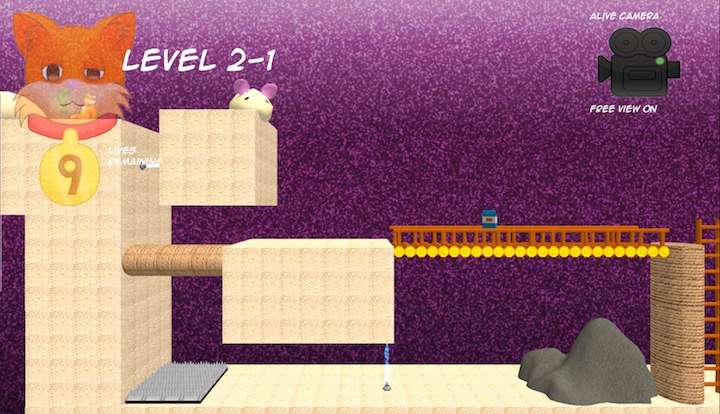
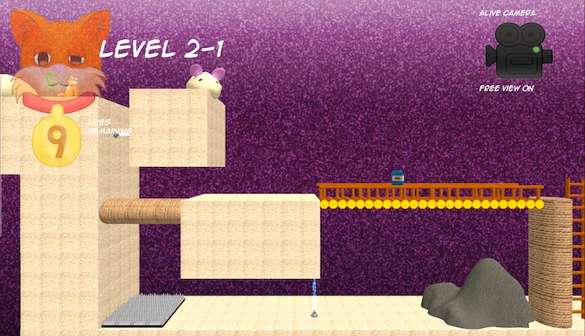

Laura Longworth
9 Lives
About
Our team was given a theme and a style. Our goal was a puzzle game about life and death. 9 Lives was developed to tell the story of a fat cat that chooses to use his nine lives to collect food. This 2.5D game has two worlds to every puzzle, an alive and a dead world. The player needs to ultimatly kill the cat at certain points as to navigate between the alive and dead world. The game was created in 5 weeks with 5 teammembers.
What Laura Did
On this project I took the role as enviromental artist. I made all the textures and themes. I created all the particle systems and designed the overall look of the game. Due to a group desicion, the city theme has enviromental models at the bottom where they are difficult to see. Also the game manager wanted to keep the game on 1 unit dimensional blocks which also limited my ability to make enviromental elements in the game. However, I did make dynamic textures for each level and world and repeatable bridges and ladders for various uses.
 
